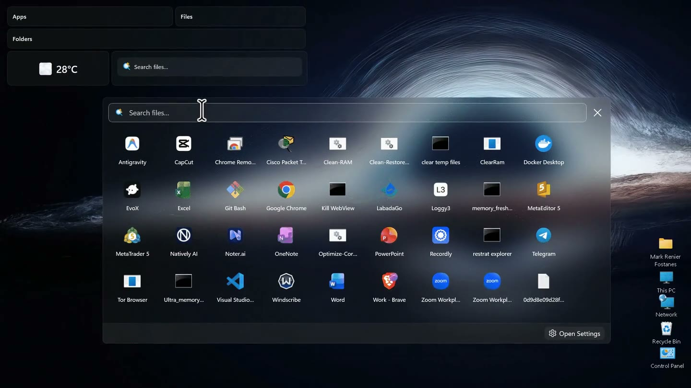
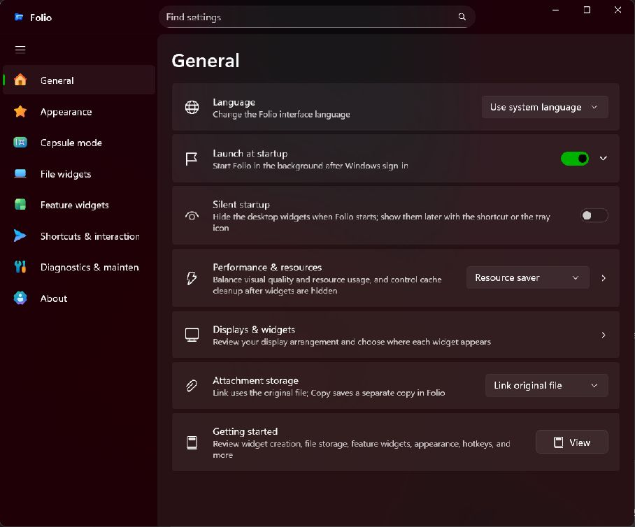

Group desktop icons
Make one widget for a selection or separate it into Apps, Files, and Folders. The widget keeps shortcuts to the original paths.
Group files, folders, and apps into widgets. Keep the tools you use every day one glance away.
Windows 10 and 11 · x64 and ARM64

Put current projects, reminders, and utilities on the desktop, then collapse the widgets when you need more room.
Make one widget for a selection or separate it into Apps, Files, and Folders. The widget keeps shortcuts to the original paths.
Choose a visual layout preset or save your own. Collapse widgets to their titles and open a capsule when you need it.
Check the forecast, control music, jot down a quick note, or pull up a task list without opening a separate workspace.
Pick a rail or bar from the visual presets, or save the positions you’ve already arranged. Collapse widgets to their titles when you want a clear view of your desktop.
Set up a layout

Enable launch at startup and Folio restores your saved widget layout on the configured display. Choose Resource saver to limit background cache and memory use.
Set up automatic launchThe installer includes the Windows App Runtime for offline installation.